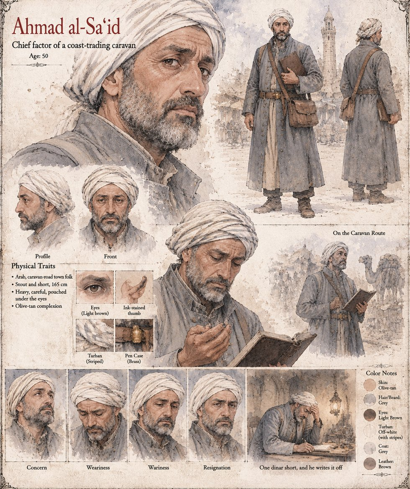

The Caravan's Chief Factor
Chief factor of a coast-trading caravan · called Ahmad al-Sa'id on his sheet · one dinar short against a ledger he trusts · about fifty by the sheet
A chief factor of a coast-trading caravan, who finds himself one dinar short against a ledger he trusts, re-counts for a week, and writes the loss off as his own mistake. The manuscript sets his silence beside that of Hammad, who says nothing about a shepherd who keeps spending a coin he somehow still has: two careful men, a province apart, each cheated by the same dinar, and neither says so aloud. The character list gives him a role and no name.
The sheet is captioned Ahmad al-Sa'id, a name the manuscript does not give, and draws him stout and short, with a heavy, careful face pouched under the eyes, thin grey hair under a striped off-white turban, a close-clipped grey beard, light brown eyes and olive-tan skin, in a long grey coat with pewter buttons and a leather satchel, with an ink-stained thumb and forefinger, a brass pen case at his belt and a leather-bound ledger. Its expression panels run concern, weariness, wariness and resignation, and its last scene is captioned one dinar short, and he writes it off. The name, the age of about fifty and everything visual are the sheet's.